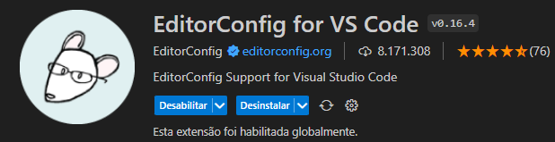

Primeiro passo sera preciso baixar a extençao para q possa cria-lo

agora dentro da pasta onde for criar o projeto e com botao direito do mause é so clicar na pasta de origem
dentro do vscode e ir na opção generator raiz do projeto.
Depois disso será criado um arquivo .editorconfig